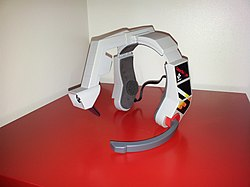

Konami LaserScope
A voice-activated head-mounted targeting device for the NES — shout 'Fire!' to shoot.

Overview
The Konami LaserScope was a voice-activated headset targeting system for the Nintendo Entertainment System, released in 1990. Unveiled at the June 1990 Summer Consumer Electronics Show in Chicago, it was a $39.95 white plastic headset with over-ear headphones, a boom microphone, and a transparent eyepiece that hung in front of the player's right eye. The eyepiece projected a red LED crosshair reticle that the player superimposed on the TV screen. When the player shouted 'Fire!' (or any sufficiently loud noise), the microphone triggered the light gun sensor, effectively acting as a voice-controlled NES Zapper.
The headset connected to controller port 2 and drew power from the NES's audio output jacks — no batteries required. The eyepiece contained a photodiode sensor that worked like a standard NES Zapper, detecting the CRT's scanline flash when aimed at a valid target. A critical design flaw: the LaserScope could not function standalone; a regular NES Zapper also had to be plugged into controller port 1.
Only an estimated 5,000–10,000 units were produced. It was designed primarily for the game Laser Invasion (1991) but worked with any NES Zapper-compatible game. Retrospective consensus ranks it among the worst video game peripherals ever made — the microphone triggered on any loud noise including breathing and coughing, head-based aiming caused neck fatigue, and the device fit only the smallest heads. Yet it stands as one of the earliest mass-market voice-controlled gaming peripherals and a remarkably prescient combination of head-mounted display, voice input, and spatial aiming that would not be practically realized until modern VR headsets, two decades later.
Deep dive
Konami developed the LaserScope internally as a peripheral for the NES Zapper software library. It was demonstrated at the June 1990 Summer CES by Konami marketing coordinator Susan Bach, at the same show where Nintendo unveiled the Super Famicom (SNES) and Sega showed the Game Gear — meaning the LaserScope was promoting a peripheral for a console already nearing the end of its commercial life. The companion game Laser Invasion (known as Gun Sight in Japan, though the Japanese Famicom version did not support the LaserScope) was released in 1991 and included a mail-in rebate for the headset. The game's villain was named 'Sheik Toxic Moron,' who planned world domination with his 'TechnoScorch Missile.'
The white plastic headset featured an adjustable headband, over-ear stereo headphones that played game audio, a boom microphone positioned near the mouth, and a transparent plastic eyepiece on an articulated arm in front of the right eye. The eyepiece projected a red LED crosshair onto its surface, creating a heads-up-display-style aiming reticle the player could see superimposed on the TV. Aiming required moving the entire head rather than the wrist (as with the handheld Zapper) — physically tiring and slower. The microphone used a simple amplitude threshold, not actual speech recognition: any sufficiently loud noise — shouting, clapping, breathing near the mic, or 'a seagull outside' — would fire. The detachable scope module allowed the headset to function as standalone stereo headphones with any audio source, connected via the NES's RCA audio output.
The LaserScope could not operate on its own. It plugged into controller port 2, but a standard NES Zapper also had to be plugged into controller port 1 for the system to recognize light gun input. The LaserScope essentially acted as a voice-triggered remote trigger for the Zapper connection. You literally needed a better controller to use the worse one. This dual-peripheral requirement, combined with mic hyper-sensitivity, head-aiming fatigue, a short cable limiting playing distance, and a hard plastic headset that seemed 'designed for the smallest of all children,' made the device nearly unusable in practice.
The LaserScope was an unequivocal commercial failure. Consolevariations estimates only 5,000–10,000 units were produced, with a rarity score of 66/100. Only one game was specifically designed for it (Laser Invasion), and it worked poorly even with that. Early reviews from Game Players magazine called it 'a little gimmicky, but it works' (January 1991) before later noting the microphone's hyper-sensitivity made shouting 'awkward' (July 1991). It appears on virtually every 'worst video game peripherals ever' list. Jeff Gerstmann of Giant Bomb placed it among 'that tier of NES peripherals that are these weird, optional things... You're just playing the same video games with flimsier, fudgier controls.' Today, surviving units are sought-after collector's items.
Despite its failure, the LaserScope matters deeply to HCI history. It was arguably the first mass-market consumer voice-controlled video game peripheral, predating Microsoft Kinect voice commands by 20 years and modern voice assistants by even longer. It attempted to combine head-based spatial aiming, visual heads-up display, voice input, and audio output into a single wearable device — a remarkably ambitious integration of multiple interaction modalities for 1990. The projected crosshair on a transparent eyepiece was an early consumer implementation of an augmented-reality-style HUD. It is cited in academic HCI literature on voice interaction in games (DiGRA, SAGE Journals) and in studies of disability and voice-enabled gaming (Springer). As a design-failure case study, it illustrates why novel interaction modalities require careful usability testing: every core design choice created friction that compounded into unusability.
Team & pioneers
- Konami Industry Co. Ltd.. Japanese video game developer and publisher; developed the LaserScope internally as an NES peripheral.
- Susan Bach. Konami marketing coordinator who demonstrated the LaserScope at the June 1990 Summer CES (Associated Press photo).
- Nobuya Nakazato. Director and artist for Laser Invasion (1991), the primary game designed for the LaserScope.
- Masato Maegawa. Main programmer for Laser Invasion.
Media
